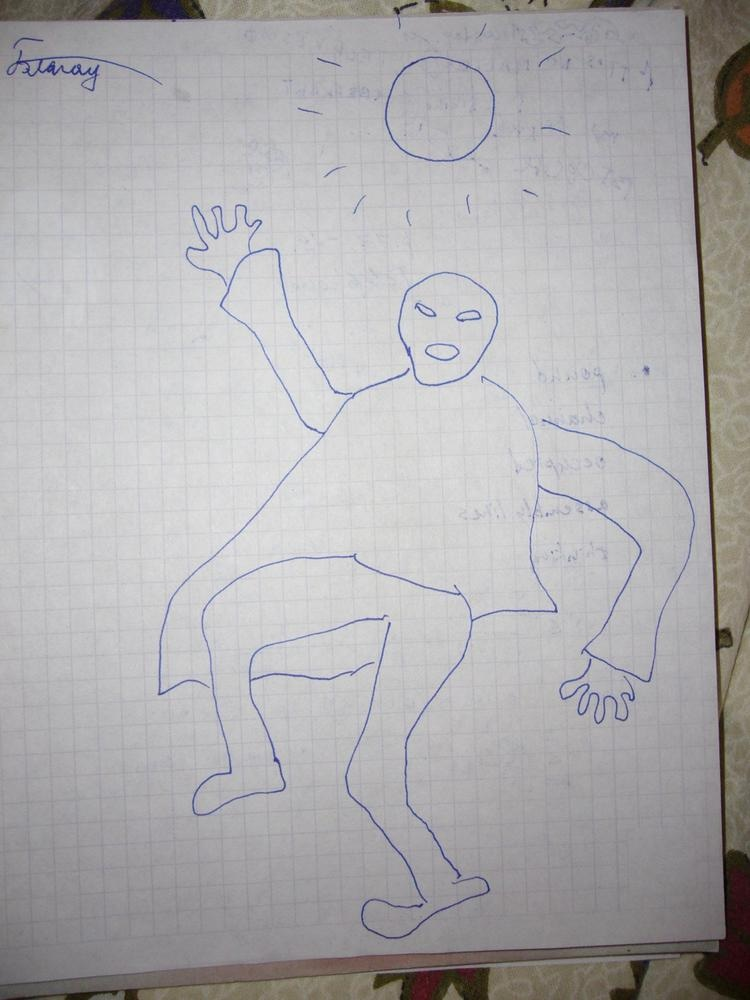

<h2 class="page-title">Рисунки</h2>

<div class="post post-drawings">        
    <div class="post-content">
        <p>Декадентских рисунков почти не сохранилось. Есть например вот этот:</p>
        
    </div>
</div>

<script> //Selecting of active item in sidebar
    let element = document.getElementById("sidebarDrawings");
    element.classList.add("active")
</script>